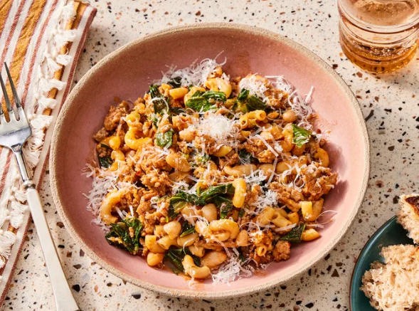

Pasta

Description
Red sauce pasta is a classic Italian-inspired dish featuring a rich, tangy tomato-based sauce infused with garlic, herbs, and a hint of spice. This comforting and flavorful meal is perfect for a quick lunch or dinner, bringing together simple ingredients for a deliciously satisfying experience. The sauce, made with ripe tomatoes, olive oil, and aromatic seasonings, coats each strand of pasta beautifully, creating a perfect balance of sweetness and acidity. A final touch of Parmesan cheese and fresh basil adds depth, making this dish both visually appealing and irresistibly tasty. Whether you're cooking for yourself or serving guests, this red sauce pasta is a foolproof recipe that never fails to impress!
Ingredients
- 200g pasta (penne, spaghetti, or fusilli)
- 2 tbsp olive oil
- 3-4 garlic cloves, minced
- 4 ripe tomatoes, blended (or 1 cup tomato purée)
- 1 small onion, finely chopped
- ½ tsp red chili flakes (optional)
- 1 tsp dried oregano
- ½ tsp black pepper
- Salt to taste
- ¼ cup water or vegetable broth
- ¼ cup grated Parmesan cheese (optional)
- Fresh basil leaves for garnish
Steps
- Boil the Pasta - Cook pasta in salted boiling water until al dente. Drain and set aside.
- Prepare the Sauce - Heat olive oil in a pan, sauté garlic and onions until fragrant. Add tomato purée, chili flakes, oregano, salt, and pepper. Let it simmer for 5-7 minutes.
- Combine - Add the drained pasta to the sauce, mixing well. If needed, add a little water to adjust the consistency.
- Garnish & Serve - Top with Parmesan cheese and fresh basil. Serve hot and enjoy!
Home